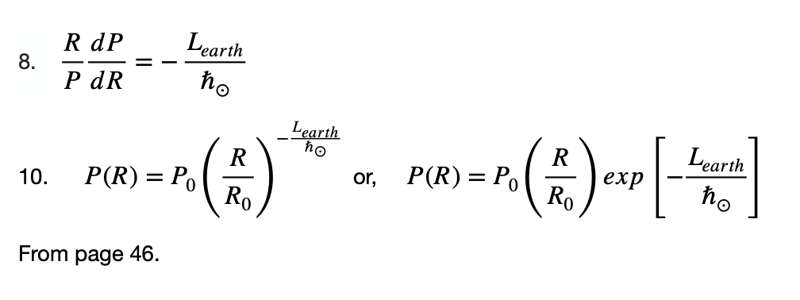

Home 2
Home 2
September 29 2024
ChatGPT says I can solve the wave equation with my rotational angular momentum of the earth to my Planck constant for the solar system because being the rate of decrease of the pressure gradient with radius for the protoplanetary disc it is the quantization of angular momentum in the solar system. That is I can solve the wave equation for the solar system with

***************************************************************************************
The formation of planetary systems from a protoplanetary disc of gas and dust has it solution analytically in the pressure gradient balanced by the gravitational forces of the protostar and centripetal forces of the disc’s rotation. It can be quite complex to solve planetary formation like this. I have a solution of the Schrödinger wave equation for our planetary system and since this is the wave equation you solve for electrons orbiting a proton in an atom in quantum mechanics, the solution, like in the atom depends mostly on merely the orbital number of the body. We can see in part 6 at the end of this paper the Earth solution in the wave equation appears in the analytic modeling approach with the potential of making solutions simpler. This might open a lot of doors. While more massive, luminous stars (blue stars) have some advantages to habitable systems compared to medium (yellow stars like ours) and lighter stars (red stars), and lighter stars have some advantages compared to medium and heavier stars, it would seem medium, yellow stars like our Sun are best overall for life, if not intelligent life. This approach with a wave solution integrated with the classical, analytical approach may open a lot of doors and make it possible to show that perhaps life is part of a universal natural process in the universe, where medium luminosity yellow stars like our Sun are ideal.
By finding the solution to the Solar System of the Schrödinger Wave Equation used to solve the atom in quantum mechanics, a characteristic length for habitable planets of star systems is proposed. It gives the orbit of the Moon which we find is proportional to the cube of the planet’s mass to the cube of its Moon. The moon is included because our moon makes life optimally possible because its orbit holds the Earth at its inclination to its orbit allowing for the seasons, preventing cold and hot temperature extremes. Part of the solution involves the property of our Earth/Moon/Sun system that it has a near perfect eclipse which is to say that the the Moon as seen from the Earth near perfectly eclipses the Sun.
The solution exists in the formation of spacetime operators that have a characteristic time of 1 second. This is the way it happens and is interesting because the second precedes the development of modern physics and ultimately has its origins in the ancient Sumerians, who were of the first to settle down from wandering and gathering to invent agriculture, writing, and mathematics — civilization in general. Our unit of a second stems from their base 60 counting system. So that is looked at and it may be that the dynamics of base 60 are responsible for the naturalness of the second. The spacetime operators also solve the proton that is the fundamental unit of charge for atoms.
It is being suggested that life might be part of a Universal Natural Process, not just because of what we just said above, but because the same spacetime operators that solve the Solar System and the atom also are based on a sixfold symmetry found in the hydrocarbons which are are the skeletons of life chemistry.
I think this theory presenting life as a natural universal process has value in that it gives us a context with which to look at current times where we have sent men to the Moon and robotic landers to the planet Mars. A time where we are planning a manned mission to Mars, as well as making plans to colonize the red planet. In that we are now an interplanetary spacefaring civilization, perhaps to soon become one that is interstellar.
****************************************************************************************
The Questions Most Asked (September 24 2024)When I present my theories based in the scientific method, reasoning, mathematics, these things are always questioned, are they human inventions or discoveries and do they as such really have anything to do with reality. Indeed theoretical physics asks these questions, still has no satisfactory answers, and most people think science has the answers, but in reality the theoretical physicist knows it does not because the assertions of physics and science at some point fall apart when you try to say what reality might actually be. Mathematics is a formal system, and formal systems are in the end self-referential. Here is what I have answered.
Were the laws of the Universe born when it originated? Or, is it that it couldn't be otherwise? In other words if two triangles are the same as a third, are they the same as one another? Is that something that comes into existence with the Universe, or is it that it couldn’t be otherwise?
What ultimately happens when we ask that, and the James Webb Telescope is finding the Big Bang might be wrong, is that only the human mind needs origins and beginnings, because it cannot think outside of cause and effect. In order to have an effect, you need a cause, at least this seems to me to be the conundrum the human mind cannot go beyond. If we speak of the beginning, then we need a cause for it. If we find the cause, we need a cause for that cause, and it regresses like this infinitely. If we try to say it had no beginning and always has been, this doesn't work either for the human mind, because why would it be one way over another? The only answer can be that the human mind is not capable of explaining its way out of the paradox. Stephen Hawkings offered up that it doesn't make sense to speak of before the beginning because time was created along with space in the Big Bang, but he admittedly said later that this doesn't actually explain anything because inherent in it is that time had to come into existence at a particular time.
He admitted in saying time began in the Big Bang meant that it happened at a certain time. You really have to admit that because it uses the word "began" which is the past tense conjugation of to begin. Of course you could find a way out of that, but it would only result in another conundrum.
It would seem reason is a human invention, and something else is at play. Mathematics is reasoning, but it is only an abstraction of what we perceive reality to be, we really don't know what the mathematical idea of distance (or space), for example, represents. It is described by velocity over time, but velocity is described by distance per time. We end up with distance=distance. Dr. Richard Allen Miller said it nicely: "Space is the way the human mind choses to organize information".
A good book that deals with this subject in depth is “Mathematics: The Loss of Certainty” by the mathematician Morris Kline. He tells the history of how people came to believe that science has the answers. That it was during the age of reason and the enlightenment that a lot of things were being discovered using mathematics and reason, like Newton’s Principia, which is a system for the working of the Universe including a Universal Law of Gravitation, mechanics that solve physical system like laws of motion, and calculus, a mathematics that deals with change and people felt that for the first time they were explaining reality. But in modern times mathematicians and physicists found everything in mathematics was based on assumptions that couldn’t be proved and this results in conundrums. However Kline goes on, and I agree with this, science is a tool and the best we have come up with so far, it can land us on the Moon. But today, the theoretical physicist is trying to come up not just with engineering spacecraft but coming up with a formal system that is complete thus explaining away the conundrums and thus understanding reality truly, and this is necessary to overcome engineering obstacles to go further, to make better technologies that we currently can’t access.
Perhaps Quantum Physics will help us out of this one day because it says at the quantum level there is no determinism, no cause and effect. That is why Neils Bohr said: "Everything that makes up reality can't be considered real, if you have missed that, you have missed the point of quantum mechanics." So quantum mechanics has no cause and effect, but it predicts results. However we can't access what is going on by its Heisenberg Uncertainty Principle. One thing I thought I might get out of my paper is if we can solve our planetary system with the wave equation, then by looking at the planetary system we can suggest what might be going on that we can't access in the world of the quanta, of the atom. Clearly planetary systems are different than electrons around a proton in the atom, the planets are of different masses, protons and electrons are all the same. Planets don't instantaneously jump from one orbit to another, electrons do. But it seems to me the Earth orbit is not based around the Earth and the Sun, but in the Moon that orbits the Earth in my theory in this paper. That may be a clue, I think. But I haven't been able to make sense of it.
So the question is were laws like conservation of energy born in the beginning, or could it not be otherwise? The question is: how do you get energy without doing work? Yet if the Universe sprang into existence uncaused, from nothing, that is the creation of energy without doing work.
There are some who say magic is a trick. But the universe springing into existence from nothing, uncaused, is not a trick, it is magic.
Of course science does give us some kinds of answers, like my paper may allow me to show that life is part of a Universal Process and one day we may be able to test that, but currently physics will not tell us in another sense what reality actually is.
******************************************************************************************
By finding the solution to the Solar System of the Schrödinger Wave Equation used to solve the atom in quantum mechanics, a characteristic length for habitable planets of star systems is proposed. It gives the orbit of the Moon which we find is is proportional to the cube of the planet’s mass to the cube of its Moon. The moon is included because our moon makes life optimally possible because its orbit holds the Earth at its inclination to its orbit allowing for the seasons, preventing cold and hot temperature extremes. Part of the solution involves the property of our Earth/Moon/Sun system that it has a near perfect eclipse which is to say that the the Moon as seen from the Earth near perfectly eclipses the Sun.
The solution exists in the formation of spacetime operators that have a characteristic time of 1 second. This is the way it happens and is interesting because the second precedes the development of modern physics and ultimately has its origins in the ancient Sumerians, who were of the first to settle down from wandering and gathering to invent agriculture, writing, and mathematics — civilization in general. Our unit of a second stems from their base 60 counting system. So that is looked at and it may be that the dynamics of base 60 are responsible for the naturalness of the second. The spacetime operators also solve the proton that is the fundamental unit of charge for atoms.
It is being suggested that life might be part of a Universal Natural Process, not just because of what we just said above, but because the same spacetime operators that solve the Solar System and the atom also are based on a sixfold symmetry found in the hydrocarbons which are are the skeletons of life chemistry.
I think this theory presenting life as a natural universal process has value in that it gives us a context to look at current times where we have sent men to the Moon and robotic landers to the planet Mars. A time where we are planning manned mission to Mars, as well as making plans to colonize the red planet. In that we are now an interplanetary spacefaring civilization, perhaps to soon become one that is interstellar.
****************************************************************************************
It is shown here that we can find a solution to the Schrödinger wave equation for the Solar System as planets orbiting a central star and for the moon’s of these planets. The solution is of the same wave equation used in quantum mechanics that solves the atom as electrons around a central nucleus. The solution for the planetary orbital systems has the same characteristic time as the characteristic time for the proton, the primary fundamental unit of the atoms, which is a base unit of time in terms of which everything is described. That characteristic time turns out to be 1 second, and as such we suggest that the unit of a second is the characteristic time of the Universe, bridging the micro-cosmos and the macro-cosmos describing them in terms of a common set of spacetime operators. Because the second is the base unit in the Western time measuring system that ultimately originated with the beginning of civilization in Mesopotamia with the ancient Sumerians from their base 60 sexagesimal counting system we look at these people who first settled down from wandering and gathering to invent agriculture, writing, mathematics, and government.
Because the ancient Sumerians say in their writings that they were given their knowledge by those who came from the sky, the Anunaki, and because their mathematics lead to our system of measuring time we have today which uses the second that we find here is the characteristic time of the Universe in terms of modern physics, we entertain the ancient aliens hypothesis, that posits we were visited by aliens in ancient times who perhaps kickstarted the first civilizations which were in Mesopotamia, Egypt, and the Indus Valley, and from which civilization throughout the world today was derived.
We take a look at the ancient Vedic (Hindu Indian) time system and show it has a profound connection to the that of the Mesopotamian and ancient Egyptian systems.
In the wave solution for the planets, the mass of the Earth’s moon determines the ground state and the algebraic condition for the Moon perfectly eclipsing the Sun as seen from the Earth is suggested to be a possible optimum condition for a planet to support life; the lunar orbit holds the Earth at its tilt to its orbit around the Sun preventing extreme hot and extreme cold allowing for the seasons. The Moon appears to be some kind of a natural yardstick for measuring the size of the Sun, which is in terms of its size, and for determining the characteristic time of the Universe, which is in terms of its mass.
It would be great if we could find like we did for time the characteristic lengths and masses of the universe, and it would be great if they happened to be what our metric system uses, as is the case with time. Something did suggest itself nicely for the unit of length, the meter, to be Natural, and this is treated in Part 2.
We need more observations and more complete data of other star systems to see if the solutions here apply to them. It may be the theory presented here solves other star systems and has related solutions for stars with habitable planets. It may be that this theory would have applications in what could be called a project genesis where we engineer life sustaining systems. I solve the Tau Ceti system with the theory, a star system where we have been able to detect an Earth-like planet that is in the habitable zone of a Sun-like star. Our space-time operators that solve the solar system and the atom are shown to perhaps solve biological chemistry as well.
*****************************************************************************************
Click here to read Ancient Aliens, UFOs, and Spacetime Operators (June 05 2024)
UFOs in 1952 hovered over the capitol for two weekends, fighter jets were scrambled. Washington is at the same 37 parallel that I found connected to UFO activity and is the path of the star vega (See above paper). I just learned about this and it turns out since then the US has built its important facilities on that latitude, including Area 51.******************************************************************************************
My paper below is centered around UFO's in Manitoba, Canada. It would seem the place is active again:Click here to read Ancient Aliens, UFOs, and Spacetime Operators (June 05 2024)
This book consists of three papers, two dealing with extraterrestrials and UFO’s, and one a theory for reality that plays a role in the papers about extraterrestrials and UFO’s.
*****************************************************************************************
Do The Moonmakers Exist And Is The Moon Important?
My paper “The Earth A Habitable Planet As A Solution To The Wave Equation” solves our planetary system with the Schrödinger wave equation. It may even solve what it means to have habitable star systems in general and leads me to consider the possible existence of what we could call “The Moonmakers”.If the Earth Day gets longer, it will have less cooling and get warmer. If the Moon’s orbit gets larger it may be it will less effectively hold the Earth’s tilt to the Sun, and we could lose the seasons and end up with temperature extremes bad for life. It may be that a condition for complex intelligent life on Earth is:
r_planet/r_moon = R_star/R_moon
The more immediate problem before us is catastrophic climate change (global warming). Since the industrial revolution we have greatly increased the amount of the heat retaining gas CO2 in the atmosphere. Parts per billion have gone up from about 200 to 400. Trees make some of this and some of it is necessary, or the Earth would get to cool, but too much, the tipping point is considered 350, and the Earth will warm beyond what is necessary for life to be as successful as it has been. A less immediate problem is the Sun is warming by very small amounts over time. In 2 billion years it would warm to the point that it would boil away the oceans. A star with the mass of our Sun will stay on the main sequence for 10 billion years, after which it will deplete its fuel and and expand beyond Earth orbit and start burning the by-products of its earlier fuel. This should happen in about 5 billion years, at which point it would seem Mars, further away from the Sun than the Earth, might become the habitable planet. A star with half the mass of our Sun, a red dwarf, can last 80 to 100 billion years on the main sequence, longer than the current age of the Universe 13.8 billion years. We have found an Earth sized planet in the habitable zone of such a star, the TOI 700 system, and we expect to find a lot more. Red dwarf stars are the most populous in our galaxy. However, because they are cooler, the habitable zone is closer in, meaning the planets are probably tidally locked with the stars they orbit, meaning their days are the same as their year, just as the day of our moon is the same as its month, these bodies always having the same face toward what they orbit. Thus for a habitable planet around a red dwarf, one side is always extremely hot and the other extremely cold. The habitable region of such a planet would be where night meets day on its surface, the twilight zone.
There is a great mystery surrounding our moon, it has a very low density, meaning it has a low mass for its size, and it is considered very large and massive for the Moon of a terrestrial planet like the Earth, which is more typical of a moon orbiting a gas giant like Jupiter or Saturn.
Because of the strange mass of the Moon and its unusual occurrence around a planet like the Earth, and its unusually nearly perfect circular orbit, it has been suggested by some scientists to be hollow, even a hollow spacecraft, put there to help life by holding the Earth at its tilt to its orbit. When we went to the Moon, NASA dropped the launch stage for the lander on the Moon, and they measured the seismic activity. It rang for an hour like a bell, as if it were hollow. The Earth doesn’t do this, some say because of all the water on its surface dampening it, others say only something hollow could ring like that.
This makes me think of a science fiction short story be Arthur C. Clarke, The Sentinel, which was the precursor to the movie 2001. It had in the first mission to the Moon, two astronauts finding a glistening object atop a mountain on the Moon. They climbed up to it and broke the protection barrier surrounding the sentinel, which was a large monolith monitoring Earth. They said call Earth and tell them to expect visitors. They realized in breaking the seal, it would stop communication of the sentinel with its makers, making them aware that we figured out how to get from Earth to the Moon.
In 2001 the movie large monoliths were put on the Earth and the Moon to monitor human progress. The monolith makers seeded the Universe with life and put monoliths on the planets to monitor the progress of life and to give it evolutionary nudges when needed. Perhaps the Moonmakers, if they exist, if our Moon is really a hollow spacecraft holding the Earth at its tilt to its orbit to make life possible, perhaps they put it there because we are supposed to figure that out, go there, enter the craft and move the Moon when needed to be in an orbit that counters the factors that are not beneficial to life that are underway. Perhaps the Moon is something that can be moved to adjust the climate of the Earth.
Our equation in this paper for the Earth orbit does not depend on the Moon’s distance from the Earth, only its mass. The Moon slows the Earth rotation and this in turn expands the Moon’s orbit, so it is getting larger, the Earth loses energy to the Moon. The Earth day gets longer by 0.0067 hours per million years, and the Moon’s orbit gets 3.78 cm larger per year.
Our wave equation solution may only use the Moon’s mass but the equation for kinetic energy of the Moon to kinetic energy of the Earth times the Earth Day equal to about one second:
(KE_moon/KE_earth)(EarthDay)=1.08 seconds
which we connect with the equation where the proton gives one second:
Equation In Proton Radius and Proton mass gives one second.
This holds for when the Moon was at a distance from the Earth such that it appears the same size as the Sun, which means:
r_planet/r_moon = R_star/R_moon
Which is when the two equations above for one second connect to our wave equation solution to the Earth.KE_planet=(sqrt(n))(R_star/R_moon)(G,M_planet,M_moon,h_star)
The Moon at its inclination to the Earth in its orbit makes life possible here because it holds the Earth at its tilt to its orbit around the Sun allowing for the seasons so the Earth doesn’t get too extremely hot or too extremely cold. We see the Moon may be there for a reason.
****************************************************************************************
Does A Prebiotic Path To Life On Earth Exist
I have waded through the literature and the limiting factor is phosphate compounds.
In order to have life you need the 20 genetically encoded amino acids. DNA and RNA synthesize these into the proteins life needs. Miller and Urey simulated a hypothetical early Earth with the constituents water, methane, ammonia, and hydrogen mixing them together in a bottle and passing a current. They produced 11 of the genetically encoded amino acids, but not all of them.
Life also needs DNA and RNA. To have this you need the sugar ribose, phosphates, and the nucleobases adenine, cytosine, guanine, thymine, and uracil. Prebiotic paths, paths before life existed, to these nucleobases, exist, but they have to combine with ribose to make nucleosides, and these have to combine with phosphates to make nucleotides. There exist prebiotic paths to nucleotides, but they have to polymerize into long chains and the reactions required to do this use phosphate compounds that we know did not exist on early Earth. This is the main problem in trying to explain life on Earth. Phosphates are rare on Earth, life needs them for nutrients, and they are the limiting factor in Earth ecosystems that determine life density.
One could suggest life arose on planets that were rich in phosphates, evolved into intelligence, and polymerized nucleotides in a laboratory and put them on Earth.
The problem also that arises though, is the sequencing of the nucleobases into a complex set of instructions for synthesizing amino acids into the proteins life needs. We don’t know how such a set of instructions, the genetic code, could evolve into existence.
Further problems arise in the fats, or lipids; they make up a big part of the cells that make make up life that house the DNA and RNA.